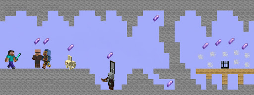
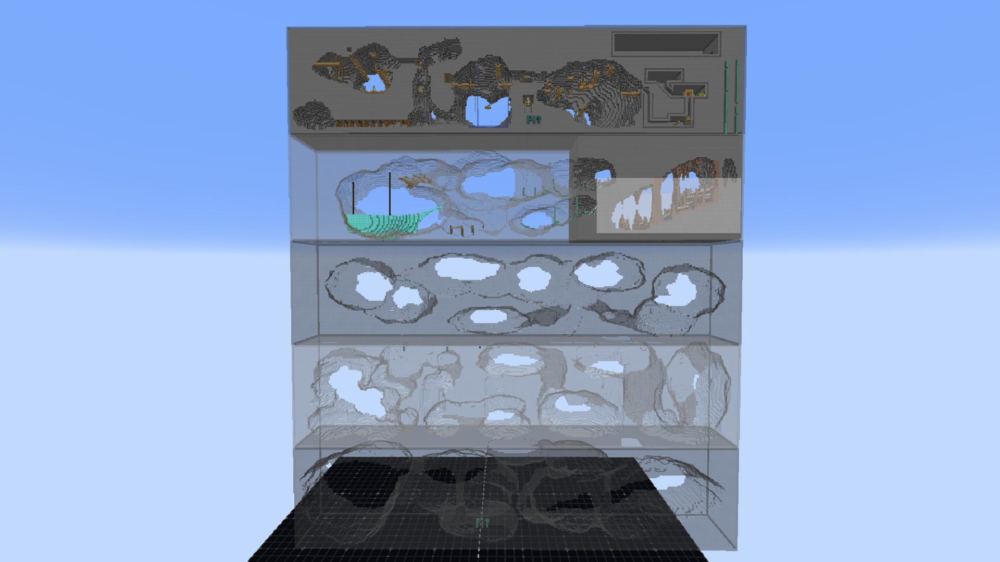
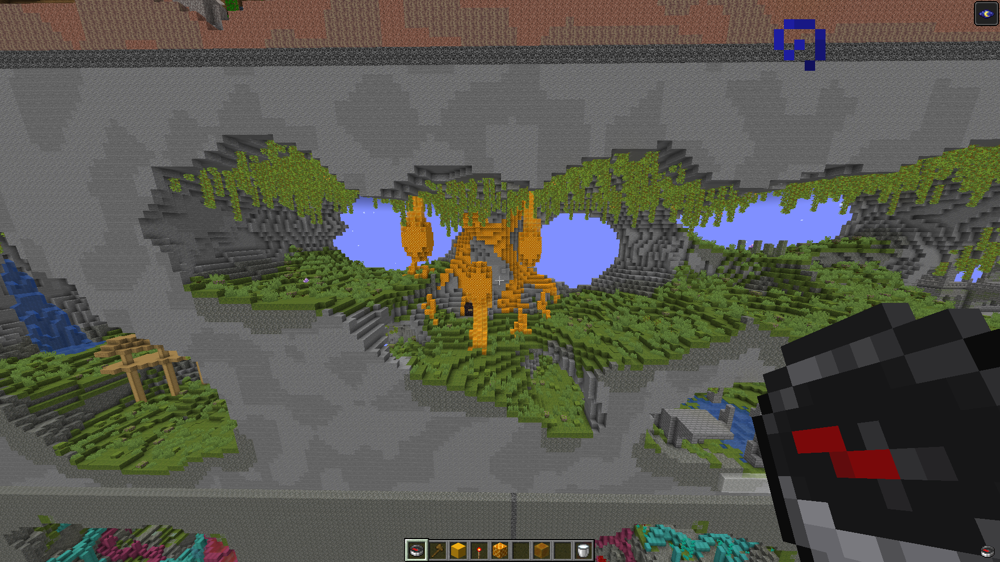
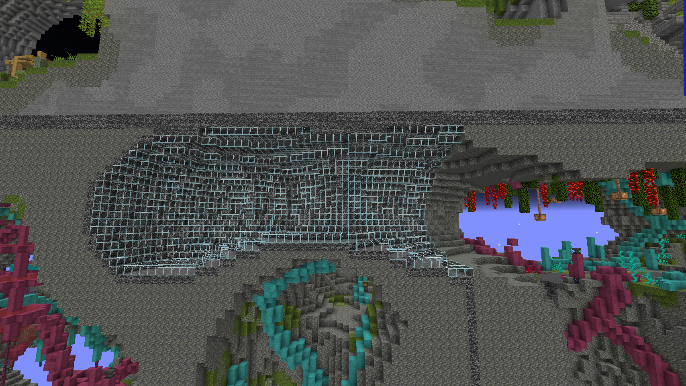

Teams of 4 must collect the most shards in a giant PvE map within 45 minutes. There are 4 areas each with 10 shards which must be collected before advancing further down the depths of the lane. Shards can be collected from various tasks such as trading, mining in hazardous areas, killing a special mob or a wave of mobs, and a bunch scattered in the dungeon at the end of each area. After clearing all 40 shards, players will spawn in an arena and go through raids of mobs to collect more shards to help determine the placement of each team throughout the event. This project was a part of a Twitch Rivals Minecraft minigames event.
Shards of the Void takes inspiration from Complete The Monument (CTM) maps which are giant custom PvE maps made in the Minecraft community. The goal for CTM maps is to collect the ~16 colored wool each within a different dungeon with increasing difficulty over time. The map itself also takes inspiration from Race for Wool (RFW) which consists of 2 mirrored lanes where teams can bow and cannon each other while trying to complete the 3 wool dungeons the fastest. Those lanes would range from being 5-20 blocks wide and a couple hundred blocks long, while taking up a lot of space vertically.
Around the time this project came out, the height limit in minecraft got increased drastically and the Deep Dark update was approaching which would come with the new boss, the Warden. We wanted to fit this map within the 384 blocks of vertical height and provide unique areas which could also lead up to a final area that includes content from the upcoming update that was somehow within the game’s files at the time. Each area was given the same amount of space and always had a final dungeon at the far end of the lane which had most of the shards located. Shards could be seen through walls so players don’t get stuck searching for them and instead understand the general direction and fight through mobs to get there.
We ended up scrapping the 5th area because it was going to be themed as a stronghold but that dungeon would be too similar to what was in the 3rd area’s jungle temple. Instead, we had players drop into the bottom of the lane and enter a teleporter into a gigantic arena which would spawn waves of enemies and give a shard at the end of each one. This was done as we didn’t believe players might be able to finish the 5th area within 45 minutes and instead had it so that once they finish the 4th, they will enter a non-stop onslaught of enemies to add to their score. If teams were able to finish the 5th area originally, there was nothing else for players to do which is why we also swapped to an endless mode for the final area.
Play testing took a lot of time to get right. Plenty of spawners and custom mobs needed to be changed, shard locations, and some layout changes were needed to help guide players. Players only have a small amount of text before the game starts to understand what to do and for a $50,000 event, we want to make sure things are easy to understand quickly so they don’t get stuck and confused while others breeze by. The streamers consist of various skill sets so we couldn’t have a super difficult challenge or something that can be speedrun quickly.
Bedrock would be needed in various areas to prevent players from tunneling throughout dungeons so that we force PvE interaction and no “cheese” strategies. The lane is mirrored across the void to also give players an idea of what the area’s layout looks like and where the shard locations are at too. We wanted to make sure dying wouldn’t be frustrating, so all items would be stored in chests upon dying and it would be blast proof so that creepers can’t blow it up. A default kit is applied within spawning and beds are given to let players have forward spawns further into the area as well.
This was a major success especially for it being a completely new group of builders, developers and managers coming together compared to previous Twitch Rivals events. A lot of streamers and viewers found this game to be one of the most interesting minigames that the event had and it provided a lot of great content with clutch plays of streamers getting shards or evading hundreds of mobs to reach the end. For me personally, this was the first time building in the most up-to-date version of the game and I was able to learn a bunch of new tools for landscaping and other WorldEdit commands to get the project done. I was responsible for a bunch of building and layout work on the first 3 levels while also making the final area structures.
Jump to 2:29:00 in the Twitch VOD.
Player POV